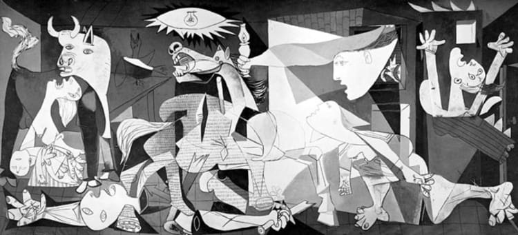
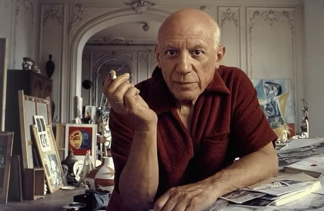

Guernica est un chef-d’œuvre de Pablo Picasso réalisé en 1937. Inspirée par le bombardement de la ville basque de Guernica le 26 avril 1937 pendant la guerre civile espagnole, la peinture dénonce la guerre, la violence et la barbarie. Avec ses formes déformées et sa palette monochrome, elle plonge le spectateur dans l’horreur et la souffrance.

Guernica
Contexte historique
Commandée par le gouvernement républicain espagnol pour l’Exposition universelle de Paris en 1937, Guernica devait représenter l’Espagne et dénoncer les crimes franquistes. Picasso refuse qu’elle retourne en Espagne tant que Franco reste au pouvoir, et l’œuvre est exposée au MoMA de New York jusqu’en 1981, avant de rejoindre définitivement Madrid. Elle est devenue un symbole universel contre la guerre et l’oppression.
L’artiste : Pablo Picasso
Pablo Picasso (1881-1973) est l’un des artistes les plus influents du XXᵉ siècle et cofondateur du cubisme. Avec Guernica, il mêle cubisme, symbolisme et influences surréalistes pour traduire la douleur, la peur et le chaos de la guerre. L’œuvre reflète son engagement politique contre le fascisme et sa profonde humanité.

Pablo Picasso
Derrière l’image
Picasso peint Guernica à l’huile sur une immense toile de plus de 7 mètres de large et 3 mètres de haut. Le choix du noir, blanc et gris renforce l’effet dramatique et rappelle la photographie documentaire. Les formes brisées et les visages déformés accentuent la violence et l’émotion, plongeant le spectateur dans la tragédie.
Au cœur de la création
La toile représente un chaos total : un cheval blessé au centre, un soldat démembré, un taureau, une mère hurlant avec son enfant mort, et des flammes. Aucun ennemi n’est montré : Picasso dénonce la guerre elle-même et ses conséquences tragiques. Chaque figure symbolise la souffrance humaine et animale, la peur et la résilience.
Les dessous de la création
Guernica a été réalisée dans l’atelier parisien de Picasso, rue des Grands-Augustins, alors qu’il vivait en exil volontaire. La taille monumentale de la toile crée une présence imposante et immersive, qui plonge le spectateur dans l’horreur de la scène.
Guernica aujourd’hui
Depuis 1992, Guernica est exposée au Musée national centre d’art Reina Sofía à Madrid, dans une salle protégée et climatisée. Les visiteurs peuvent découvrir l’œuvre en détail grâce à des visites guidées et explorer son symbolisme et son impact historique. Le musée, situé près de la gare d’Atocha, est un site incontournable de la capitale espagnole.